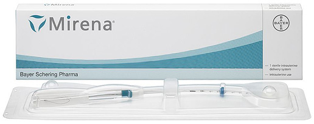

Установка внутриматочной спирали в Санкт-Петербурге
от 20 500 ₽
Установка внутриматочной спирали (ВМС) – современный, эффективный метод предотвращения нежелательной беременности. С учетом типа спирали действие сохраняется 3-5 лет, эффективность метода составляет не менее 98%. Гинекологи клиники «Балтмед» устанавливают ВМС в амбулаторных условиях после предварительного обследования.
Высокая эффективность
Эффективны на 99%
Удобно в применении
Не нужно помнить про ежедневный прием таблеток по схеме
Длительный срок
Устанавливается сроком до пяти лет и эффективна в течение всего периода
Лечебный эффект
Может оказывать лечебный эффект при миомах матки и эндометриозе
Разновидность ВМС и принцип их действия
Установка ВМС – гинекологическая процедура, которая заключается во введении в полость матки изделия с контрацептивным эффектом преимущественно в виде спирали, реже кольца или Т-образной формы. Основной принцип действия – торможение сперматозоидов, которые направляются в полость матки. Контрацептив изменяет свойства слизи, которая находится в цервикальном канале – слизистая пробка становится вязкой, что препятствует продвижению сперматозоидов.
Спираль может сокращать продолжительность жизни яйцеклетки, в случае ее оплодотворения не дать ей прикрепиться к стенкам маточной трубы. С учетом состава внутриматочные контрацептивы бывают двух видов:
Медьсодержащие. Имеют Т-образную форму, где все элементы обмотаны
медной
проволокой. Введенный контрацептив не дает полости матки смыкаться, а медь вызывает незначительное местное
воспаление, из-за чего сперматозоиды теряют способность к оплодотворению.
Гормональные. Содержат гормон прогестин, который
препятствует зачатию. Он подавляет функционирование яичников и не дает зафиксироваться яйцеклетке в
эндометрии.
Женщины, которые используют данный вид контрацепции, должны помнить, что он может защищать только от нежелательной беременности, а не от половых инфекций.
Стоимость
Хотите, мы вам перезвоним?
ответим на все Ваши вопросы!
Преимущества ВМС
- высокая надежность. Действие начинается практически сразу после установки, дополнительные методы предохранения не нужны;
- быстрое восстановление фертильности после удаления ВМС
- долгосрочность использования – в среднем 5 лет, после чего необходима повторная установка;
- нет дискомфорта и болезненности при половом контакте;
- доступная цена установки внутриматочной спирали
- не доставляют дискомфорта;
- большое количество разновидностей ВМС, что дает возможность подобрать оптимальный вариант для конкретной пациентки
- можно использовать в период лактации;
- нейтральное воздействие на углеводный, жировой обмен, что важно для пациенток с ожирением
ВНИМАНИЕ! ВМС не защищают от венерических заболеваний. Из недостатков – возможное увеличение длительности менструации и обильности кровотечений. При несоблюдении правил гигиены повышается риск развития заболеваний половых органов.
Популярные вопросы
По форме лучше использовать спирали с округлыми плечиками. В отличие от Т-образных, они не раздражают углы матки. Используются в основном медьсодержащие или гормонопродуцирующие спирали. Их эффективность по данным ВОЗ составляет соответственно 93,8% и 99,8%. Таким образом, гормонопродуцирующие внутриматочные контрацептивы обеспечивают более надежную защиту от нежелательной беременности, поэтому они более предпочтительны.
По форме лучше использовать спирали с округлыми плечиками. В отличие от Т-образных, они не раздражают углы матки. Используются в основном медьсодержащие или гормонопродуцирующие спирали. Их эффективность по данным ВОЗ составляет соответственно 93,8% и 99,8%. Таким образом, гормонопродуцирующие внутриматочные контрацептивы обеспечивают более надежную защиту от нежелательной беременности, поэтому они более предпочтительны.
По форме лучше использовать спирали с округлыми плечиками. В отличие от Т-образных, они не раздражают углы матки. Используются в основном медьсодержащие или гормонопродуцирующие спирали. Их эффективность по данным ВОЗ составляет соответственно 93,8% и 99,8%. Таким образом, гормонопродуцирующие внутриматочные контрацептивы обеспечивают более надежную защиту от нежелательной беременности, поэтому они более предпочтительны.
Противопоказания
Установка контрацептива не проводится в следующих случаях:
- вагинальные инфекции;
- патологические выделения из половых путей неустановленной этиологии;
- беременность;
- воспалительные процессы в органах малого таза;
- патологии влагалища, матки, ее шейки, особенно это касается злокачественных опухолей;
- аллергическая реакция на материал спирали
- кровотечения неизвестной этиологии;
- длительные, обильные менструации.
- нейтральное воздействие на углеводный, жировой обмен, что важно для пациенток с ожирением
Кто проводит процедуру?
Где мы находимся?
Подготовка к установке
- влагалищное исследование;
- УЗИ органов малого таза;
- расширенную кольпоскопию (при необходимости);
- мазок на инфекции передающиеся половым путем;
- общий, биохимический анализы крови
- мазок на микрофлору
До установки должны быть пролечены все воспалительные гинекологические заболевания. За несколько дней до процедуры нужно исключить половые контакты, не вводить свечи, не делать спринцевания. Спираль устанавливают в первую неделю менструального цикла, преимущественно с 4-й по 7-й дни, так как в этот период приоткрыт канал шейки матки. Если манипуляция приходится на другие дни цикла, необходимо предварительно исключить беременность.
Устанавливать ВМС можно сразу после аборта, пока женщина под анестезией. После выкидыша процедура проводится не раньше чем через неделю, после естественных родов – через 6 недель (при условии, что нет осложнений), после кесарево через полгода.
Рекомендации после установки
После введения ВМС стоит отказаться от половых контактов, спринцеваний на 5 дней, не пользоваться тампонами в первый менструальный цикл. После установки врач назначает контрольный прием через неделю, далее через 3 месяца. Рекомендовано пройти УЗИ, чтобы убедиться в правильной фиксации изделия. В дальнейшем консультация врача со сдачей мазков, контрольными УЗИ необходима 2 раза в год.
В первые дни может беспокоить боль внизу живота, которая легко устраняется приемом обезболивающих. Возможны кровянистые выделения, они исчезают самостоятельно в течение недели. При появлении кровотечения, выраженной боли, выпадении спирали, повышении температуры необходимо сразу обратиться к врачу.